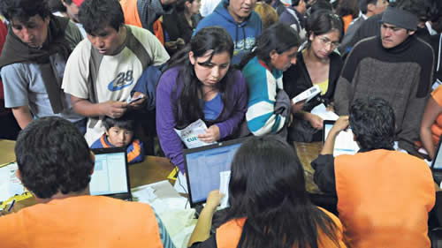

Real Chubut - Agencia de Noticias


La ONU reclamó la derogación del decreto de Macri contra los migrantes

El informe del organismo internacional, que es vinculante, también solicita al Estado argentino a revisar todas las medidas de expulsión que derivaron del DNU de 2017, respetando el derecho a la unidad familiar y al interés superior del niño.
El Comité de Protección de los Derechos de los Trabajadores Migrantes de Naciones Unidas reclamó al gobierno de Mauricio Macri derogar el decreto 70/2017 a través del cual se restringió el ingreso de ciudadanos extranjeros al país y se facilitó su expulsión.
A diferencia de otros Comités de la ONU que ya habían condenado el decreto (como el Comité de los Derechos del Niño o el Comité Contra la Tortura), esta resolución advierte por primera vez sobre las consecuencias que generó, las expulsiones masivas y separaciones familiares, que de acuerdo con la Defensoría General de la Nación suman al menos 125 casos, de los cuales 109 son de madres o abuelas de residentes en Argentina que tuvieron que separarse de sus familias. Esos datos fueron tomados en cuenta por el órgano de la ONU, que pidió al gobierno que tuviera especial atención en estos casos para no seguir vulnerando derechos humanos.
A partir de la presentación que realizaron organismos de derechos humanos y asociaciones protectoras de migrantes a principios de septiembre en Ginebra, el Comité denunció que el DNU "no cumple los fundamentos básicos de la Convención" a la que está suscrita Argentina desde 2007. Por lo tanto, emitió una serie de recomendaciones urgentes, por las cuales el país deberá rendir cuentas en octubre de 2020, y otras a largo plazo que tendrá que informar dentro de cuatro años.
Raisa Ortiz Cetra, integrante del equipo de Trabajo Internacional del CELS, quien participó de la presentación del informe conjunto de más de quince organizaciones nacionales, entre ellas la Comisión Argentina para Refugiados y Migrante y el colectivo Migrar no es Delito, resaltó que el Comité "se pudo adentrar en las consecuencias de la implementación del DNU".
"El informe es muy completo en relación a nuestras denuncias, también celebra el reingreso de Vanessa Gómez Cuevas pero solicita la revisión de los demás casos, entre ellos los de de Liz Moreta y Jhony Quiroz", relató a Página/12 la especialista.
El documento podría ser también un aliciente para que la Corte Suprema falle contra el decreto. En marzo de 2018 la Sala V de la Cámara Contencioso Administrativo Federal declaró inconstitucional el DNU, pero el Gobierno apeló y ahora la causa se elevó a la Corte, que todavía no se expidió sobre el tema. Mientras tanto el decreto sigue vigente.
Ortiz Cetra confía en que la resolución del Comité influya en la decisión del máximo tribunal, en tanto el documento "es muy contundente" porque especifica que el decreto "es opuesto al contenido de la Convención". "Esperamos también que la Corte entienda el impacto del DNU no sólo a nivel normativo, que comprenda el impacto concreto que tiene y que cuanto más tarda en tomar una decisión, más se ve afectada la vida de los y las migrantes de la Argentina", resaltó.
La condena a las expulsiones masivas
La declaración del Comité de la ONU hace especial hincapié en las expulsiones masivas de migrantes que se registraron en los últimos dos años. De acuerdo al colectivo Migrar no es Delito, 870 personas ya fueron separadas de sus familias, mientras que a otros 830 migrantes ya les comunicaron su deportación, aunque la organización espera que con esta resolución sus expulsiones "se congelen".
Un caso paradigmático que llamó la atención de la Convención fue el deGómez Cuevas , la migrante peruana que en febrero de este año fue expulsada del país, dejando detrás de sí a dos de sus hijos desamparados.
La resolución exhorta al Estado argentino que "la detención administrativa sólo debe utilizarse como medida de último recurso", e insta al Gobierno a que tome en cuenta alternativas a la 'retención' que actualmente se aplica a los migrantes".
El CELS, por su parte, espera que el Estado cumpla con las indicaciones y considera como buen augurio la decisión de la Dirección de Migraciones de permitir el regreso de Gómez Cuevas. El organismo cree que si se revirtió la decisión original, "el Estado también tiene que estar abierto a abrir otros casos, porque lo hizo cuando autorizó el regreso de Vanessa", según evaluó Ortiz Cetra.
"El gobierno siempre supo que el DNU era un error, que era nefasto, pero por suerte la protesta social en las calles y los reclamos de los organismos de derechos humanos hicieron posible la reconsideración de un caso que tomó estado público", celebró Alexander, referente de Migrar no es Delito, que desde la sanción del decreto organizó movilizaciones para repudiar las medidas que asociaban la inmigración con la delincuencia.
Uno de los aspectos de mayor preocupación expuesto por las organizaciones fue "la separación de familias y las expulsiones que violan el debido proceso y el derecho a la defensa, agravadas por significativas fallas en el control judicial de las decisiones de la administración". Alexander lamentó que en Argentina, desde el 2015 al 2019, las expulsiones de migrantes "aumentaron un 200 por ciento". "Era un país caracterizado por ser acogedor, pero desde la Ley Videla no se habían producido tantas expulsiones masivas como con en la era Macri", manifestó el activista, en referencia a la ley vigente desde 1983 a 2003, que permitía la expulsión de una persona sin que interviniera el Poder Judicial.
Las organizaciones de derechos humanos advierten que hay una relación directa entre las medidas en contra de los derechos de los migrantes y el discurso xenófobo institucional que se instaló desde la Casa Rosada y su círculo cercano . "Para Miguel Ángel Pichetto que vuelva al país una compañera que había sido expulsada es molesto porque el Gobierno vende xenofobia, pero su problema no es con la migración en general sino con el migrante pobre porque, como bien lo dijo Macri, 'Sudamérica era una región de migrantes europeos' ".
Fuente: Pagina 12